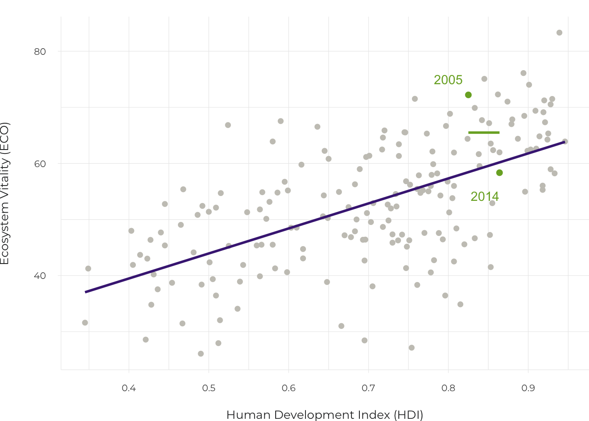
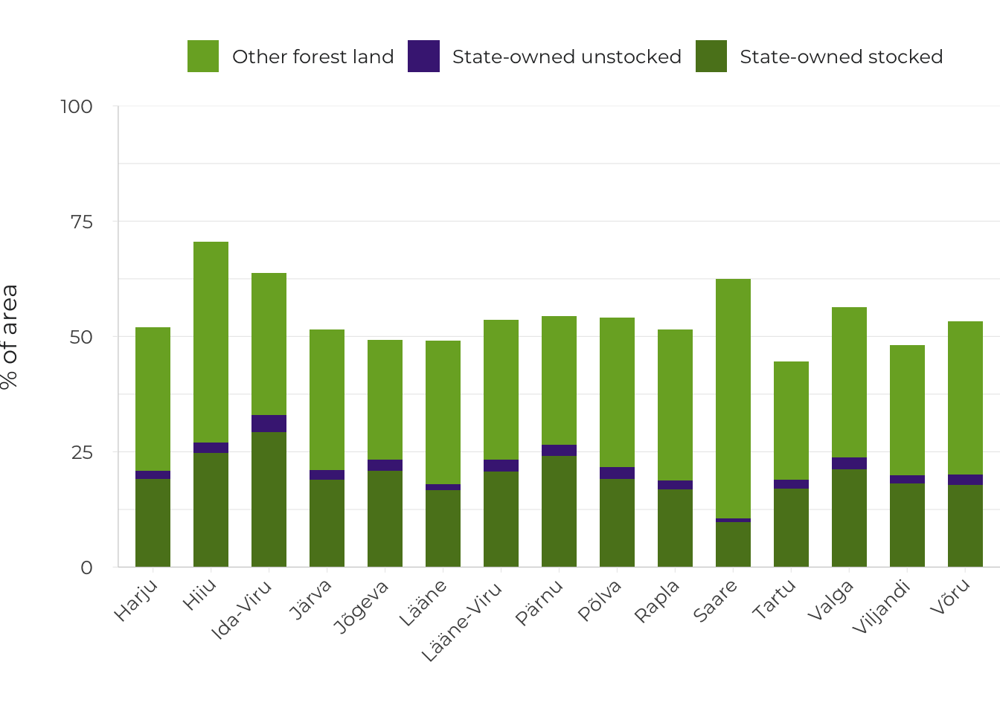

Introduction
Natural environment as a public good
- Public use of the natural environment promotes democracy through environmental justice and a shared experience of nature.
In Estonia, this is supported by a tradition of spending time in nature and getting to know nature. Although the planning of urban green spaces is important for promoting and maintaining democracy, there has been no comprehensive research on, or planning of, natural areas as public space. The principles of the fair distribution of environmental benefits and burdens should be addressed at the national level.
- Natural areas make up the majority of Estonia’s land cover and people are allowed to use them based on everyman’s right.
In places, the public use of natural areas has come under threat from limited access to private land and the diminishing environmental value of forests due to clear-felling. In the face of the complex environmental challenges of the 21st century, society will not benefit if people’s understanding of nature and skills to cope in nature are limited to what they experience on visiting educational or hiking trails.
- It is questionable whether natural areas make Estonia a preferable living and business environment compared to other countries in the region.
The condition of our ecosystems is not sustainable and the benefits offered by nature are being reduced. In the planning of natural areas, we need to focus more attention on the health impacts of our living environment, on universal access, and on the use of the natural environment for educational purposes and developing social relations.
From the condition of the natural environment to environmental justice and environmental democracy
The articles in this chapter examine the freedom that Estonian people enjoy in terms of their ability to move freely in nature and make decisions regarding the natural environment, and the benefits society derives from it. The broader context of these issues is the relationship between public space and democratic forms of government on the one hand, and the natural environment on the other. This context is complex, changes with time and is exposed to strong pressures from global megatrends, so it is hardly possible to point to a single right solution for Estonia either today or in the future. However, current knowledge does allow us to highlight the main issues concerning human development.
First, the condition of the environment. Everyone’s well-being depends on functioning ecosystems, which contribute to the quality of public space in ways that are dependent on land use patterns and forms of land ownership and governance. Hence the task of organising society: to understand, plan and manage the flow of benefits from ecosystems and their distribution among the members of society. By focusing on this task as it relates to physical space specifically, we come to the fundamental societal questions addressed in this chapter: who is entitled to the benefits of a particular area, and who has access to them and the opportunity to have a say in shaping them? These questions can be discussed from the perspective of environmental justice: the more evenly distributed the benefits are among the population, the less environmental inequality exists in society. The opportunity to have a say in shaping the environment by having and sharing relevant information, on the other hand, comes under the concept of environmental democracy. The aim of environmental democracy is to maintain and improve the condition of the ecosystems in the public space in accordance with the principle of the fair distribution of environmental benefits and burdens.
The democratic values created through the public use of the natural environment can be seen as a continuation of these immediate concerns about well-being. For example, the role of public parks in promoting shared moral and aesthetic values, appropriate behaviour and social interaction on an equal basis was already recognised more than a century ago (Mattson 1998). Today, the experience of nature can foster social cohesion, even if the experience is solitary and only shared in virtual communication. In Estonia, too, thousands of people come together on social media pages for nature photographers, foragers or those concerned by environmental problems; in different ways, all of these platforms undoubtedly play a role in democracy. Joint action, on the other hand, plays an even more direct role in shaping a cohesive cultural space. Recent decades have seen the rapid emergence of social actions in nature that promote public goods; these actions have their roots in the tradition of communal work in Estonian village culture. The Estonian Fund for Nature started organising collective actions in nature for conservation purposes already in the late 1990s. The most international attention has been caught by the waste collection campaigns that started in Estonia in 2008, and grew into the annual Let’s Do It! campaign days, on the first Saturday of May, aimed at improving the living environment. In 2018, for example, more than 53,000 people participated in almost 2,200 locations across Estonia (www.teemeara.ee).
Everyone’s well-being is based on functioning ecosystems, which contribute to the quality of public space in ways that are directly dependent on land use patterns and forms of land ownership and governance.
A national view on these issues should include an understanding of how the public use of the natural environment can help create a new political culture. For example, biocentric arguments (appealing to the intrinsic value and subjective rights of nature) are powerfully gaining currency in governance, especially when mediated by an indigenous culture (Espinosa 2017). Arguments of environmental ethics, based on a sense of belonging, biological origin and immediate experiences of nature, have found their place in discussions of legal and moral norms in Estonia (Oja et al. 2003).
The overall condition of Estonian nature has deteriorated
Natural areas make up the majority of Estonia’s land cover, including 51.4% forest land (26.2% state-owned), 4.6% wetlands, 1.5% scrubland and 5.7% waterbodies (Raudsaar et al. 2018). This overall distribution has changed little in the 21st century, but urban sprawl (an average of 1,000 hectares per year between 2002 and 2017 according to the Statistics Estonia database) has been relatively fast compared to the rest of Europe and does not meet the European Union’s long-term environmental goals. More generally, there has been an alarming setback in terms of the international Environmental Performance Index (EPI), which was used as the indicator for the relative status of our ecosystems in the Estonian Human Development Report 2014/2015 (Terasmaa and Pajula 2015). In ten years, Estonia has fallen from 26th to 48th in the world, including from 7th to 59th in terms of ecosystem vitality. Ecosystem vitality is a complex index that also covers climate change impact and air pollution indicators; but even when looking at the natural environment separately, Estonia has retreated from 17th to 24th in biodiversity and habitats, and from 124th to 129th in forests (Wendling et al. 2018). Globally, ecosystem vitality is higher in countries with a higher Human Development Index, but variability is also high (Figure 3.0.1).
Estonia’s rise in terms of the social indicators of human development has been achieved at a disproportionately high ecological cost.
The calculation process for the EPI is complicated and may contain errors. Still, the causes behind the above trends, their reversibility as well as the general condition of natural areas and the associated benefits require attention at the national level in Estonia. In a regional comparison, Estonia currently lags behind the Nordics and Baltics and has experienced the largest decline among these countries during this century (Wendling et al. 2018). Consequently, we do not have the competitive advantage of a country with ‘pure nature’ in the region and it even seems that the recent rise in terms of the social indicators of human development has been achieved at a disproportionately high ecological cost (Figure 3.0.1). This is in line with the country having lagged behind in eco-innovation, as shown by the Eco-Innovation Index compiled by the European Commission’s Directorate-General for the Environment. At the same time, environmental security remains high in Estonia – people are unlikely to lose access to clean air, water and energy sources or die in a natural disaster (Moghim and Garna 2019).
Figure 3.0.1. The correlation between the Human Development Index and the Ecosystem Vitality Index based on 179 countries, and the change in Estonia’s position (green symbols, years) 2005–2014

Source: Figure by the author.
The options for spending time in nature are narrowing
In addition to their number and location, the use of natural areas in Estonia is mainly shaped by three specific social factors: low population density, everyman’s right (Sepp and Lõhmus, this report) and the remaining rural cultural heritage shared by today’s urban population. In a global comparison, these point to a relatively great deal of personal freedom to choose how and where to spend time in nature and for how long; for example, making a habit of using someone else’s private property as a favourite place to visit. Other factors that encourage spending time in nature in Estonia include the relative safety of the region and the natural environment, the large surface area of state forests and the extensive road network in them. In these circumstances, one would expect the use of the natural environment to be limited primarily by a lack of time and mobility options for the individual, which would only locally manifest in terms of the inadequate availability of natural areas – mainly in certain parts of the larger cities Sepp and Lõhmus, this report).
Factors that encourage spending time in nature in Estonia include the relative safety of the region and the natural environment, the large area of state forests and the road network in them.
While everyman’s right makes natural areas located outside populated places the largest type of publicly used (shared) space in terms of surface area, the options for using them are narrowing. This is due to three types of land use decisions, which will be discussed below. The overall restrictive impact of these decisions, taking into account the opposite effect of the improvements in mobility and navigation, has not been studied. In addition to these decisions, movement in natural areas may also be restricted by the establishment of conservation areas; so far, however, conflicts over the public use of conservation areas have mainly been caused only by restrictions on the use of motor vehicles on waterbodies (e.g. on the lakes in Vooremaa).
1. Private landowners are restricting public land-use. Everyman’s right balances the constitutional freedom of movement with the obligation to avoid causing an environmental nuisance and not harm the interests or property of the owner. By clearly expressing their will, owners can prohibit people from crossing or foraging for wild produce on their land (Kask et al. 2015). The only relevant impact study conducted in Estonia dates back to 2008, when the population still had few negative experiences with movement restrictions in private forests but did predict that they would change their routes if restrictions were applied (Kaldaru 2008). Restrictions have apparently been applied more extensively since then, as the effects of the protracted land reform, which began in 1993, have continued, as has the active sale of forest land. The authorities have addressed the issue of blocking access to public roads; specifically, closing off public paths along the banks of waterbodies (2015 audit by the National Audit Office; Poom and Sepp, this report). Problems with access or marking have also been found in other places of interest. In the interests of balanced social development, therefore, interaction between private owners, nature visitors and the public authorities should be analysed – some contradictions and shortcomings can probably be prevented or alleviated in this way.
2. The milieu value of state forest is decreasing due to felling. After a relatively stable period between 1995 and 2008, clear-felling has increased in all forests, including by more 50% in state forests, where more than 10,000 hectares have been felled annually since 2015 (Raudsaar et al. 2018). The fact that felling reduces human-environment value is demonstrated by people’s aesthetic aversion to clear-felled areas and the traces left behind by felling (Gundersen and Frivold 2008; Kõivik 2014) as well as the practical consequences, such as the loss of forests suitable for berry or mushroom picking. These preferences were confirmed by a recent environmental awareness survey (Turu-uuringute AS 2018), which showed that forest degradation was considered the most important environmental issue in 2018 and the reliability of the State Forest Management Centre (RMK) had dropped significantly compared to 2016. Increased local protests against logging show people’s willingness to shape their living environment, at least on state land. In terms of opportunities for spending time in forest areas, the counties of Saaremaa and Läänemaa stand out for having the smallest amount of state forests and potentially the greatest impact from restrictions set by private owners (Figure 3.0.2). On the other hand, relatively little felling has been done in the state forests in Saaremaa and Läänemaa (about 7% of the state forest area was unstocked forest land as of 2017), especially compared to the counties of southeastern Estonia and Ida-Virumaa county (over 12%).
3. Opportunities for visiting are increasingly concentrated and homogenised. Although investments in visitor infrastructure keep satisfaction with nature and hiking trails high, they do not facilitate all ways of using natural areas and are not suitable for all groups in society (Sepp and Lõhmus, this report). Studies around the world show that the habit of visiting natural areas every year brings great benefits to society through better health and avoided healthcare costs – the benefits through improved mental health alone are estimated to be ten times more than the income from tourism and 100 to 1,000 times more than the cost of administering protected areas (Buckley et al. 2019). At the same time, people’s preferences when moving in nature can diverge significantly from the location of high nature value (Hornigold et al. 2016). Therefore, the environmental and health impacts of visiting protected areas as compared to having opportunities for spending time in nature close to home need to be assessed in Estonia. It is a cultural question, including a question of political culture, whether being restricted to visiting educational and hiking trails could limit people’s ability to understand and have their say in environmental decisions.
Figure 3.0.2. Share of forest land, including state forests (stocked and unstocked forest land separately) in the total area of counties in 2017

Source: Raudsaar et al. 2018.
Neighbourhood natural areas and urban green spaces require more attention from planners
The link between the public use of natural areas and democracy is most evident in local neighbourhoods, where communities can meet even during the limited time outside work, and people with reduced mobility or other special needs have easier access to nature. The right to neighbourhood natural areas as part of one’s living environment (including working environment) also comes closest to being a fundamental right, and important issues of environmental justice concern the equal treatment of people in settlement planning and their opportunities to participate in planning (Jennings et al. 2012). The issues of neighbourhood natural areas – access, quality and future prospects – are clearest in settlements: the benefits of green space are enjoyed by many people there, while there is also a strong interest in an alternative land use that would in most cases irreversibly damage the green space or limit its use. This is why access to green spaces for urban populations has been chosen as an indicator of Estonia’s sustainable development, and should be considered in strategic planning across the country (Sustainable Development Indicators 2018).
The habit of visiting natural areas every year brings great benefits to society through better health and avoided healthcare costs.
To date, green spaces in Estonia have mainly been treated in a generalised way, at the level of the whole city or urban district (Sepp and Lõhmus; Orru et al., this report). For example, it turns out that in a survey of the residents of cities in the European Union, Tallinn shows average results in terms of environmental indicators (air quality, noise level, green areas); it is the city’s cleanliness that the residents value more highly. The residents’ general satisfaction with living in their city is much less related to the accessibility of green spaces than it is, for example, with their sense of safety or the place where they live (Eurobarometer 2016). Consequently, taking into account the particular preferences of the residents and improving the condition of the environment in the process of planning urban green spaces is a difficult task requiring cooperation between the local authorities and the community. The planning of green spaces in Estonia does not take sufficient account of human health (Orru et al., this report) and universal access, or connections between home and work; there is also little reference to this in national policy documents. For example, considerations about the natural environment are absent from the Estonian mental health strategy (2016), although it is well known that spending time in nature is a good mitigator of key risk factors for mental and behavioural disorders, such as stress or mental exhaustion (ten Brink et al. 2016). The current practice of urban planning continues to reduce green spaces, and where green spaces are already in short supply, not enough attention is focused on the ways to direct people there. For example, schools and kindergartens understandably have limited on-site opportunities to provide outdoor education, but green corridors could be established to functionally connect them to green spaces.
Developing the necessary skills for navigating in the landscape or finding and using wild produce requires special attention. Some of these skills with a traditional background, such as knowing medicinal plants, are fading in Estonia, while others, such as mushroom or berry picking, are now transforming in new directions (Sepp and Lõhmus, this report). The capabilities that might require national planning include civil defence skills for coping in the case of a disaster, including instructing others in nature. Individuals who know certain areas well and visit them regularly are also potential sources of information about those areas. The state can use this as a cost-effective method for monitoring the status of the environment in its territory. The organisation, technological solutions and analytical methods of such ‘citizen science’ are sparking great interest throughout the world. Many people in Estonia have maintained a connection with the rural areas where their parents or grandparents lived; others discover for themselves the surroundings of their new country homes. For city dwellers, however, practical nature skills are easily forgotten.
Future perspectives
Adapting to the Earth’s carrying capacity will be an existential problem for human societies in the 21st century. The comprehensive integration of natural areas into the human living environment in order to use, preserve and shape the benefits of nature in a practical way will be a necessary part of this. These activities, in turn, stem from existing knowledge and practices; however, development opportunities may be limited or even closed off by social conflicts and the rigidity of the current way of life and economic structures (Cumming 2018). To ensure Estonia’s sustainable development, it is strategically important to understand the potential of local ecosystems and to treat them as best we can, recognising that the condition of natural areas is deteriorating.
To ensure Estonia’s sustainable development, it is strategically important to understand the potential of local ecosystems and to treat them as best we can, recognising that the condition of natural areas is deteriorating.
Within this framework of nature–society–culture, the articles in this chapter discuss key topics regarding the public use of the natural environment in Estonia: how people use the natural environment (Sepp and Lõhmus), what benefits they receive (Orru et al.), how the natural environment is planned to enhance well-being (Poom and Sepp) and how residents can participate in or influence planning (Vahtrus et al.). These articles share the understanding that natural areas function as interconnected landscapes in public use; their different parts have different functions and require different planning and governance methods. Accordingly, environmental and spatial planning should be integrated into all areas of government. Such integration and synergy do not yet exist in many important fields: the objectives for natural areas are not clearly defined in development documents and spatial plans, and communities and their knowledge are often ignored in the planning of natural areas.
Another point made by all the articles is that there are disparities in the access different groups have to the benefits or opportunities offered by natural areas, despite the implementation of many equalising principles (e.g. everyman’s right, the provisions of the Aarhus Convention, the nation-wide green network principle, and the diverse practices of nature management at different levels). This points to the need for a national development programme for environmental justice in Estonia, which would devise future-oriented expectations and the rights of the population regarding our living environment by linking and shaping its components. The existing programmes either do not address environmental justice at all or are outdated (e.g. the national strategy Sustainable Estonia 21, adopted in 2005 and covering the period until 2030). With regard to natural areas in particular, there is also reason to update the objectives and governance principles of the State Forest Management Centre (RMK), as this institution controls most of the country’s natural areas with public access and their infrastructure. This expectation is confirmed by the latest popular survey on environmental awareness (Turu-uuringute AS 2018) and the confrontations between communities and the RMK (Vihma 2019); the problem is also identified in the terms of reference for the national forestry development plan until 2030.
The general principle for managing the public use of Estonian nature over the coming decades should therefore be to develop diverse and sustainable human-nature connections that support human development in a way that is both comprehensive and fair. This requires paying more attention to the benefits received from the natural environment in terms of physical and mental health, safety and social relations.
References
Barnes, P. M., Hoerber, T. C. (eds.) 2013. Sustainable Development and Governance in Europe: The evolution of the discourse on sustainability. Routledge Advances in European Politics. London: Routledge.
Buckley, R., Brough, P., Hague, L., Chauvenet, A., Fleming, C., Roche, E., Sofija, E., Harris, N. 2019. Economic value of protected areas via visitor mental health. – Nature Communications, 10, 5005.
Cumming, G. S. 2018. A review of social dilemmas and social‐ecological traps in conservation and natural resource management. – Conservation Letters, 11 (1), e12376.
Espinosa, C. 2017. Bringing about the global movement for the rights of nature: sites and practices for intelligibility. – Global Networks, 17 (4), 463–482.
Eurobarometer 2016. Flash Eurobarometer 419. Quality of Life in European Cities 2015. European Commission Directorate-General for Regional and Urban Policy.
Gundersen, V. S., Frivold, L. H. 2008. Public preferences for forest structures: a review of quantitative surveys from Finland, Norway and Sweden. – Urban Forestry & Urban Greening, 7, 241–258.
Hornigold, K., Lake, I., Dolman, P. 2016. Recreational use of the countryside: no evidence that high nature value enhances a key ecosystem service. – PloS ONE, 11 (11), e0165043.
Jennings, V., Johnson Gaither, C., Gragg, R.S. 2012. Promoting environmental justice through urban green space access: a synopsis. – Environmental Justice, 5 (1), 1–7.
Kajala, L., Almik, A., Dahl, R., Dikšaitė, L, Erkkonen, J., Fredman, P., Søndergaard Jensen, F., Karoles, K., Sievänen, T., Skov-Petersen, H., Vistad, O. I., Wallsten, P. 2008. Külastajate seire loodusaladel – Põhjamaade ja Balti riikide kogemustel põhinev käsiraamat. TemaNord 2008: 516. Tallinn: Riigimetsa Majandamise Keskus.
Kaldaru, H. 2008. Metsa mitmekülgne kasutamine. Survey of residents, private forest owners and small enterprises. Tallinn: Turu-uuringute AS.
Kask, O., Lopman, E., Relve, K., Kuusk, P., Triipan, M., Vaarmari, K., Vahtrus, S., Veinla, H. 2015. Keskkonnaseadustiku üldosa seaduse kommentaarid. Tartu: Keskkonnaõiguse Keskus.
Kõivik, M. 2014. Erinevate raiete esteetiline väärtus. MA thesis. Estonian University of Life Sciences.
Magnus, R., Remm, T. 2018. Eesti võõrliikide tähendusväli: kujunemine ja linnaruumi kontekst. – Acta Semiotica Estica, 15, 89−118.
Mattson, K. 1998. Creating a Democratic Public: The Struggle for Urban Participatory Democracy during the Progressive Era. University Park: Pennsylvania State University Press.
Moghim, S., Garna, R. K. 2019. Countries’ classification by environmental resilience. – Journal of Environmental Management, 230, 345–354.
National Audit Office of Estonia 2015. Kallasradade kasutamine. Kas omavalitsused ja Keskkonnainspektsioon on teinud kõik endast sõltuva, et inimene pääseks randa ja saaks kallasrajal liikuda? Report for the Estonian Parliament. Tallinn, 8 December.
Oja, A., Keerus, K., Järvik, M., Tamm, G., Joonasson, K., Raudsepp, M., Relve, K., Veski, N., Riiberg, K., Tafel, K., Viia, A. 2003. Keskkonnaeetikast säästva ühiskonna eetikani: Inimese ja looduse vaheline tasakaal kui jätkusuutlikkuse aluspõhimõte. SEI väljaanne nr 5. Tallinn: Säästva Eesti Instituut, SEI-Tallinn, Keskkonnainvesteeringute Keskus.
Sustainable Development Indicators – Säästva arengu näitajad 2018. Tallinn: Statistics Estonia.
Raudsaar, M., Siimon, K.-L., Valgepea, M. (eds.) 2018. Aastaraamat Mets 2017. Tallinn: Keskkonnaagentuur.
Raudsepp, M., Heidmets, M., Kruusvall, J. 2009. Environmental Justice and Sustainability in Post-Soviet Estonia. – Agyeman, J., Ogneva-Himmelberger, Y. (eds.). Environmental Justice and Sustainability in the Former Soviet Union. Cambridge (Mass.), London: MIT Press, 215–237.
ten Brink, P., Mutafoglu, K., Schweitzer, J.-P., Kettunen, M., Twigger-Ross, C., Baker, J., Kuipers, Y., Emonts, M., Tyrväinen, L., Hujala, T., Ojala, A. 2016. The health and social benefits of nature and biodiversity protection. A report for the European Commission (ENV.B.3/ETU/2014/0039). London, Brussels: Institute for European Environmental Policy.
Terasmaa, J., Pajula, R. 2015. Ökosüsteemiteenused ja tasakaalu hoidmiseks vajalikud looduslikud alad. – Vetik, R. (ed.). Eesti inimarengu aruanne 2014/2015. Lõksudest välja? Tallinn: Eesti Koostöö Kogu,137–146.
Turu-uuringute AS 2018. Eesti elanike keskkonnateadlikkuse uuring.
Vihma, P. 2019. Riigimets kui ühisvara ehk kuidas lahendada Ohtu konflikti. – ERR Arvamus, 20 November.
Wendling, Z. A., Emerson, J. W., Esty, D. C., Levy, M. A., de Sherbinin, A., et al. 2018. 2018 Environmental Performance Index. Global metrics for the Environment: Ranking country performance on high-priority environmental issues. New Haven: Yale Center for Environmental Law & Policy.
Note: The correlation is based on data from the UN Development Programme for the human development index (HDI) and data from Wendling et al. (2018) for ecosystem vitality (ECO). In the case of ECO, the average start year (2005; source data 2001–2007) and end year (2014; source data 2010–2017) have been calculated as the weighted mean of the components of the index; the HDI (2014) has been correlated with the end year. The line indicates the ECO level in the Estonian Human Development Report 2014/2015 (Terasmaa and Pajula 2015); the level has not been adjusted retrospectively and the year for which this level is valid was unspecified.